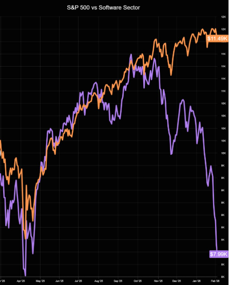
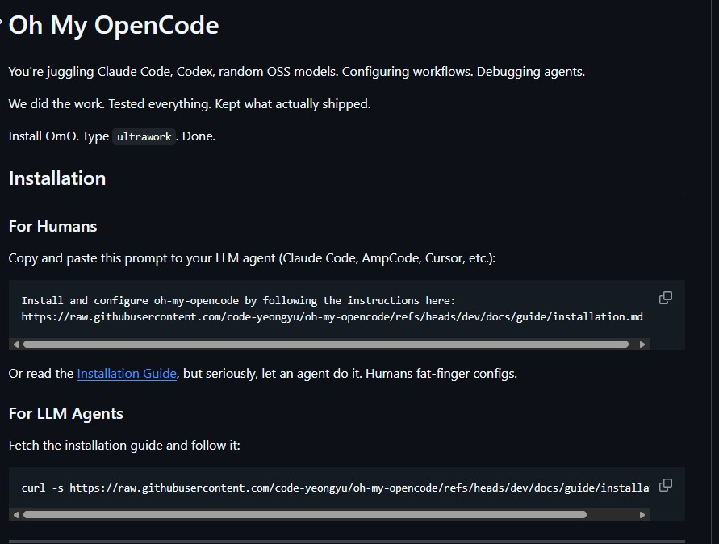

AI Tool Hands-on
프로그램
챗봇에서 에이전트로
S/W개발팀 리더진 · 2026. 3 · 김학민
프로그램 구성
이론 1시간 + 실습 3시간 = 4시간 집중 프로그램
SECTION 01
시장 반응
SaaSpocalypse — SaaS + Apocalypse
SaaSpocalypse — 시장의 즉각적 반응

S&P 500 vs Software Sector 디커플링
$2,850억 하루 시총 증발
$1조+
더 많은 직원 ≠ 더 많은 라이선스
AI Agent가 사람들이 직접 쓰고 판단을 내리는 대상이 되었다
제한된 기능
(피처폰)
무한한 확장성
(스마트폰)
1년 전의 AI 경험으로 지금을 판단하는 것은
피처폰으로 스마트폰의 가능성을 평가하는 것과 같습니다
SECTION 02
업계 기준선
지금 어디까지 와 있는가
AI 사용자 규모 — 점 하나가 120만 명

전 세계 AI 도구 사용자 분포
수억 명
ChatGPT · Copilot · Gemini 등
극소수
챗봇과 에이전트는 완전히 다른 경험
상위 0.04%
에이전트를 직접 써본 사람의 비율
AI를 들어본 사람은 많지만, 에이전트를 직접 써본 사람은 거의 없다
핵심 지표
"더 이상 직접 코드를 작성하지 않는 엔지니어가 있다" — Dario Amodei, Anthropic CEO
변화의 속도
의견이 갈리는 지점은 변화가 올 것인가가 아니라
얼마나 빨리, 어디까지 올 것인가
SECTION 03
Model ≠ Agent
핵심 개념 — 독립 변수
비유로 이해하는 구조
Model
보닛 속 엔진
Agent
조향타와 차체
개발 생산성
같은 모델이라도 어떤 에이전트 위에서 구동하느냐에 따라 성능이 달라진다
성능 공식
성능 = Model × Agent × Pilot
SECTION 04
패러다임 전환
챗봇에서 에이전트로
콜센터 ARS vs 전담 참모
챗봇과 에이전트의 결정적 차이
ARS (챗봇)
1번 누르세요, 2번 누르세요
정해진 메뉴 바깥은 불가
매번 처음부터 다시 설명
전담 참모 (에이전트)
맥락을 이해하고 알아서 조사
판단 · 실행 · 중간 보고
피드백 반영 · 후속 조치까지
무료 ChatGPT 경험만으로 AI를 판단하는 것은
ARS 경험만으로 전담 참모의 역량을 평가하는 것과 같습니다
대답하는 도구 → 일하는 도구
| 챗봇 (ARS) | 에이전트 (참모) | |
|---|---|---|
| 환경 인식 | 주어진 정보만 참조 | 조직의 전체 컨텍스트 이해 |
| 실행 능력 | 텍스트 답변만 가능 | 문서 작성 · 분석 · 도구 실행 |
| 작업 범위 | 1회 질의-응답 | 수시간 자율 실행 · 중간 보고 |
| 오류 대응 | 다시 지시해야 함 | 자체 감지 → 수정 → 재시도 |
이미 일어나고 있는 변화

출처: GitHub — Oh My OpenCode README
For Humans
"이 프롬프트를 LLM 에이전트에게
복사해서 붙여넣으세요"
For LLM Agents
curl -s 로 설치 가이드를
직접 가져와서 실행하세요
"사람이 직접 설정하면 오타낸다.
에이전트에게 시켜라."
GitHub README가 사람용과 AI 에이전트용으로 나뉘는 시대
문서의 독자가 사람만이 아닌 것은 이미 현실입니다
에이전트에서 팀(Team)으로
참모 1명 → 전문가 팀으로 확장
에이전트 1명
Solo · Sequential
순차 처리
조사
작성
검증
시각화
한 명이 순서대로 처리하던 일을 팀이 동시에 — 개인 작업에서 조직 작업으로
SECTION 05
코딩을 넘어
동시다발적 확산
영상 AI — ByteDance Seedance 2.0
- 2026. 2. 12 — ByteDance Seedance 2.0 출시
- 텍스트 입력 → 대사·효과음·립싱크 완비 영상
- MPA, 디즈니, 파라마운트, SAG-AFTRA 즉각 법적 대응
- 상업 콘텐츠 즉시 적용 가능 수준의 퀄리티
Science AI — 새로운 지식의 창출
- 2024 노벨 화학상 — AI 단백질 구조 예측 (AlphaFold)
- GPT-5.2 — 이론 물리학 난제 풀이 + 자체 검증 사례
- Gemini 3.0 Deep Think — 프로그래밍 대회 상위권 성능
기존 지식을 정리하는 단계를 넘어 — 새로운 발견에 기여하는 단계
SECTION 06
AI 인프라 병목
어디가 가장 먼저 한계에 부딪히는가
AI 인프라에서 어디가 병목인가
훈련·추론·영상·월드모델 — 결국 메모리로 수렴
영상 AI: 수백~수천 PB
long context · concurrency
영상 GB
LLM은 선형적, 영상·추론은 지수적 — 로직 칩이 아니라 HBM 공급이 출고량을 결정
왜 천문학적 투자를 멈출 수 없는가
과잉투자는 비용의 문제, 과소투자는 존재의 문제
밀려나면 다음 10–15년 AI 플랫폼에서 제외된다
— 빅테크 CEO 발언 종합
과소투자 리스크가
과잉투자보다 극적으로 크다
— Sundar Pichai, Alphabet CEO
수요 > 공급, 긴 리드타임
지금 안 깔면 따라잡을 수 없음
— 치킨게임 구도
앞다퉈 선점하는 것 외에 합리적 선택지가 없다
SECTION 07
역할의 변화
"무엇을 만들 것인가"가 새로운 병목
구현 비용의 붕괴
"코드 작성은 점점 값싼 상품이 되고 있고,— Jensen Huang, NVIDIA CEO
정말로 중요한 것은 어떤 질문을 할 수 있느냐"
PM : Engineer 비율의 역전
PM : Engineer
1 : 7
PM : Engineer
2 : 1
엔지니어링 3주 → 1일 압축 · 기획이 새로운 병목
인지 노동의 심화
모든 것을 확인하고
최종 결정해야 하는
단 한 사람
작업 실행이 빨라질수록, 다음 결정을 내리는 사람이 critical path가 된다
생산성의 역설과 도파민 루프
AI가 일을 해준다고 사람이 편해지는 것은 아닙니다
AI는 증폭기(Amplifier)
효과 가속
문제 악화
역할의 재정의
"AI가 구현을 대신할수록,— Addy Osmani, Google · Agentic Engineering
아키텍처 사고와 보안 인식의 가치는
오히려 더 높아진다"
시스템 설계 · 도메인 이해 · 품질 검증 역량의 가치가 상승
SECTION 08
기술적 가능성과
현실 제약의 분리
두 질문을 분리하라
기술 가능성과 적용 가능성의 분리
| 기술적으로 | 우리 환경에서 | 예시 | 대응 | |
|---|---|---|---|---|
| A | 가능 | 적용 가능 | 사외망 AI 코드 분석 · 리팩토링 | 즉시 시작 |
| B | 가능 | 제약 존재 | JIRA 연동 · 사내망 프론티어 모델 | 제약 해소 추진 |
| C | 불가 | 해당 없음 | 100% 신뢰 자율 아키텍처 | 기술 성숙 관찰 |
A는 오늘 실습으로 확인 · B는 논의의 여지 · C는 기술 성숙도를 지켜보는 영역
우리 환경의 제약
Hands-on을 사외망에서 하는 이유
프론티어 AI 직접 사용
실무 시나리오 6개 수행
내부 전환 우선순위 설정
써봐야 판단할 수 있습니다 — 오늘의 핵심 전제
함께 논의할 질문들
과제
가능한 것의 범위를 먼저 확인하면, 제약의 무게도 가늠할 수 있습니다
오늘의 커리큘럼
PART II
Hands-on
3시간 · 4개 시나리오 · 사외망 환경
결과물을 고치지 말고
생성기를 고쳐라
AI 산출물을 매번 수정하는 대신
프롬프트 · Skill · 규칙을 개선하면
이후 모든 산출물이 함께 나아집니다
오늘 실습의 핵심 원리입니다
환경 확인
Claude Code
터미널에서claude 입력 확인
실습 폴더
training-exercises 폴더
샘플 데이터 확인
인터넷
외부망 접속
웹 검색 가능 확인
준비가 안 된 분은 손을 들어주세요 — 옆 분과 함께 진행해도 됩니다
Lab 0: 일단 그냥 해보기 — AI 트렌드 분석
30분 · 워밍업 · 카카오톡 3,000명 커뮤니티 데이터
카카오톡 대화 로그 (2MB)
인터랙티브 HTML 보고서
트렌드 차트 · 키워드 분석
2MB 파일을 직접 읽고
분석하고 HTML로 저장
실습 전 팁 — 핵심 마인드셋
Claude Code를 대하는 자세부터 바꾸자
실습 전 팁 — 생산성 극대화
혼자 하지 말고, 시키고, 동시에 돌려라
실습 전 팁 — 고급 활용
AI를 제대로 다루는 기술
Lab 1: 웹 리서치 — 논문급 리포트 만들기
40분 · 자율 주제 · 웹 검색 → HTML 리포트
이란-미국 전쟁 전망
NVIDIA Vera Rubin 아키텍처
SSD의 미래와 HBM
삼성전자 주가 전망
자유 주제 OK
"증권가 애널리스트 스타일로"
"이 URL 느낌으로 만들어줘"
"차트 3개 이상 추가해줘"
Lab 2: Skill Builder — 리포트 공장 만들기
35분 · 결과물이 아닌 공장을 만드는 것
리포트를 한 번 만들었다
↓
Skill로 만들면
같은 품질로 무한 생산
↓
공장을 만드는 것
Lab 3: 자유 실습 — 칸반보드 / 자유 주제
40분 · 지금까지 배운 것을 총동원
칸반보드 만들기
드래그앤드롭 · 다크 테마
팀 업무 관리 도구
/research-report
만든 Skill로 다른 주제
리포트 대량 생산
자유 주제
대시보드 · 히트맵
나만의 도구 만들기
assets/labs/ 폴더의 txt 파일에 프롬프트가 준비되어 있습니다 — 복사해서 입력하세요
실습에서 구축한 Harness
| 구성 요소 | 역할 | 실습에서 체험 |
|---|---|---|
| CLAUDE.md | 프로젝트 규칙 · AI 행동 정의 | Lab 2 |
| Custom Skills | 반복 작업을 한 줄 명령어로 자동화 | Lab 2 |
| Rules & Memory | 전문가 페르소나 · 세션 간 기억 | Lab 1-3 |
| Agent Teams | 하위 에이전트 동시 실행 · 역할 분담 | Lab 3 |
결과물이 아닌 생성기를 구축하는 것 — 이것이 Harness입니다
실무에서 바로 쓰는 팁
더 알아두면 좋은 것
오늘 실습 너머의 활용 — 관심 생긴 순서대로
독립 작업 동시 진행
타이핑보다 3배 빠름
→ 웹 → 종합 보고
+ Gemini(장문/멀티모달)
나만의 맞춤 도구
= 완전한 제어
Cheat Sheet — 명령어 · 프롬프트
실습 자료와 함께 들고 다니는 빠른 참조
| /help | 도움말 |
| /compact | 대화 컨텍스트 압축 |
| /clear | 새 대화 시작 |
| /usage | 사용량 · Rate Limit |
| /copy | 마지막 응답 복사 |
| /chrome | 브라우저 연동 |
| /commit | Git 커밋 생성 |
| /mcp | MCP 서버 관리 |
맥락 + 구체적 목표 + 제약조건 — 이 3가지를 넣으면 품질이 달라진다
배운 건 나누자
팀 내 공유가 가장 빠른 학습
삽질 경험 공유
실패에서 배운 것이
가장 값지다
꿀팁 · 스킬 공유
나만의 프롬프트
커스텀 Skill 공유
커뮤니티
블로그 · 사내 위키
팀 채널 활용
한 사람의 팁 공유가 팀 전체의 생산성을 높인다 — 오늘 배운 것부터 나누자
코딩 도구가 아닙니다
실제 활용 영역 — 코드를 쓰지 않는 작업에서도
디자인 · 배포 자동화
복제 가능한 공정으로
개인 창작 · 게임
이제 일상이 됩니다
오늘의 작은 경험을 토대로 — 어떤 업무와 워크플로우에 적용할지 판단해보는 시간
Today's Takeaway
- 1. 챗봇과 에이전트의 차이 — 직접 경험으로 확인
- 2. 코딩 도구가 아니다 — 생각을 구현하는 다목적 인터페이스
- 3. 반복 작업을 Skill로 — 복제 가능한 공정
- 4. CLAUDE.md + Skill — 개인 매뉴얼과 자동화
- 5. 업무 안팎 모두 — 아이디어 검증 속도 확보
- 6. 들어서 아는 것보다 — 해보고 판단하기
들어본 것에서
해본 것으로
좋더라, 별로더라, 이런 것도 되겠네, 저건 안 되겠네 —
직접 경험한 사람의 판단이 필요한 시점입니다
토론 & 평가
해봤으니 이제 말할 수 있습니다
- 오늘 경험 중 가장 인상적이었던 것은?
- 내 업무에 바로 적용할 수 있는 것은?
- 기대와 달랐던 것, 아쉬운 점은?
- 팀에 공유하고 싶은 한 가지는?
AI Tool Hands-on 프로그램 · 2026. 3 · 김학민